SQL Server and Database installation guide
This document contains information on how to install and configure SQL Server for Navithor.
Updated 11.06.2021
Version History
| Version | Date | Author | Change |
|---|---|---|---|
| 1.0 | 18.12.2020 | Tommi Kärki | Rewrote document |
| 1.1 | 16.04.2021 | Evgenii Kuzminskii | Corrected the name for "Creating an SQL login for Windows authentication mode" chapter |
| 1.2 | 11.06.2021 | Aleksi Ålander | Renamed title |
Applications referred to in this guide
SQL Server
- Hosts databases
SQL Server Configuration Manager
- Configuring SQL server connections
- Can also be found as: SQLServerManager15.msc (number depends on version)
SQL Server Management Studio
- Configuring SQL Server settings
- Configuring SQL Server logins
Navithor Database Tools
- Ships with Navithor Fleet Control
- Configuring connection to SQL Server and specifying name of database to connect to
- Performing installation and upgrade
- Taking database backups
Navithor Server
- Fleet control software
- Requires database connection
Navithor Tools
- Environment and route editing Tool
- Required database connection
Installing SQL Server
Navithor Server uses SQL Server as the database of choice. SQL Server Express is free to use and sufficient for most production areas. Express edition comes with following major limitations at time of writing:
- Database size is limited to 10 GB
- 1 socket or 4 cores
- High availability is not supported
See: https://docs.microsoft.com/en-us/sql/sql-server/editions-and-components-of-sql-server-version-15?view=sql-server-ver15 for full comparison.
This document will cover Express installation but we also support other editions.
Downloading
Choose Express. Developer version contains all features of SQL Server but license does not allow usage for production.
https://www.microsoft.com/en-us/sql-server/sql-server-downloads
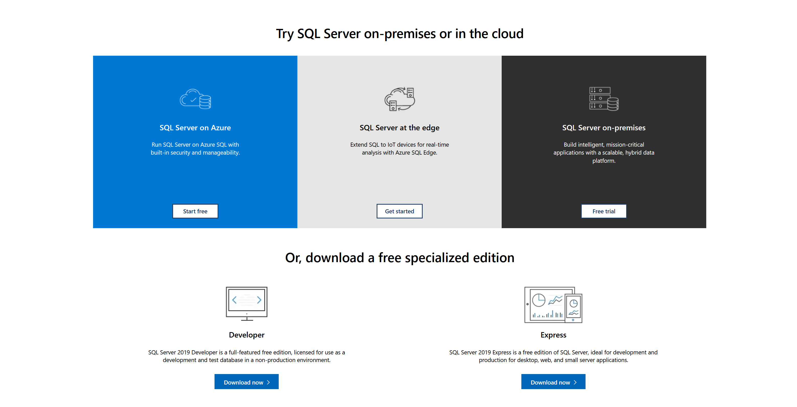
Screen capture of site on 18.12.2020, current version might look different.
Installation
After download has been completed, launch the installer.
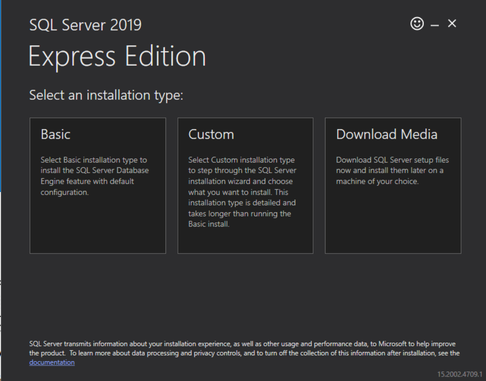
Initial pop-up window. If you have internet connection on your device choose "Basic"
If you are installing on a device without internet connection the setup files need to be transferred manually. To do so:
- Launch installer on another device that has internet connection
- Click on "Download Media"
- Follow instructions on screen
- Copy the setup files to device without internet connection
- Launch installer again. It will ask for Setup files when needed.
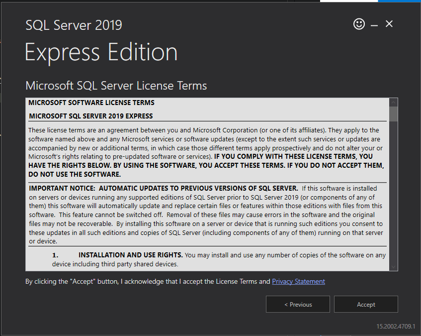
License terms. Read and click Accept
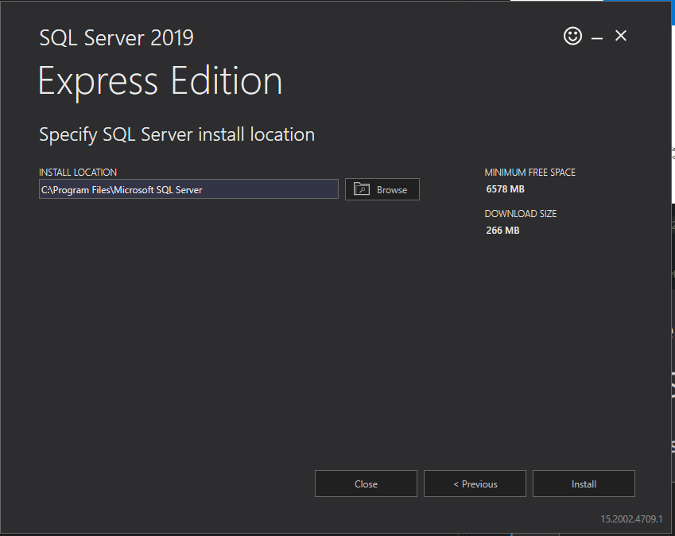
Choose where to install.
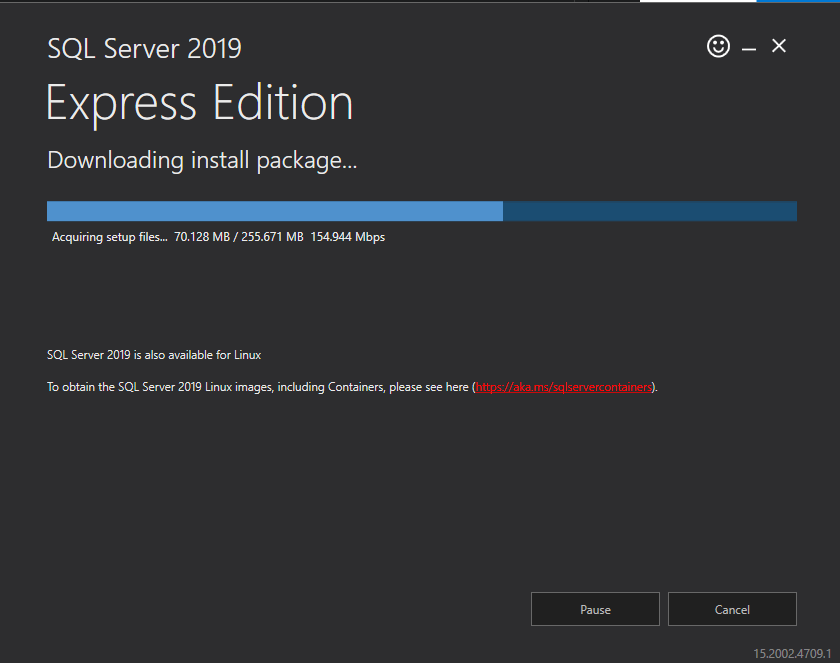
SQL Server is downloading and installing on background
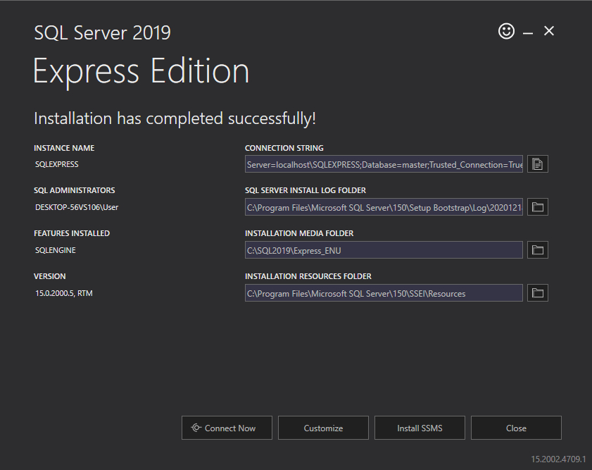
SQL Server has been installed
Next steps:
- Click on "Install SSMS" to Install SQL Server Management Studio which will be used for configuration
- Install Navithor Fleet Control database
- Configure SQL Server authentication with SSMS
- Configure external connection using Named Pipes or TCP connection
Launch SQL Server Management Studio (SSMS) on the device you installed SQL Server on and you will be greeted with this popup

Connect window
By default the server name should be local host (if this is the only installation of SQL Server on device) and Windows Authentication is enabled. Administrator rights are required To map Active Directory users, if you installed the SQL Server on your current account then these should be automatically granted. If not, contact your IT support.
Configuring server name and different types of authentication will be covered later in the document.
Click on Connect. If this fails take a look at Configuring connection or Troubleshooting for instructions
Configuring connection
Using Integrated Security
An important thing know about Integrated security option is that the credentials of the user who launched the application will be used when authenticating. Generally this means the user that is logged in to the computer. Application can be run as a different user by shift + right-clicking on the application or by running the application as a Windows service.
Windows authentication for remote connections work only if the accounts are defined in an Active Directory forest or in a Workgroup. It is not possible to use Windows authentication if the SQL Server and the Navithor Server application are not in the same domain, unless the domain where Navithor Server exists is marked as a trusted domain.
Using Navithor Database Tools to configure Connection string
Navithor Database Tools provides user interface which can be used to build connection string. Connection string defines which server to connect to, with which protocol and what type of authentication to use among other things.
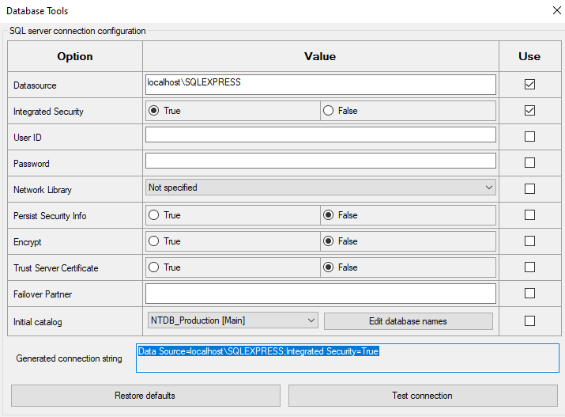
Default installation configuration
Overview of different options.
| Setting name | Usage |
|---|---|
| DataSource | Where SQL Server instance is located. How to fill this field depends on connection type but generally it is <server address>\<instance name>. For example: localhost\SQLEXPRESS |
| Integrated Security | Whether to use Microsoft authentication. If not specified Microsoft Authentication will be used. If set to false then SQL Server authentication which requires configuring SQL Server separately to allow this type of authentication. |
| User ID | If Microsoft authentication is used then this should not be used. Otherwise this will be SQL User name/id. |
| Password | If Microsoft authentication is used then this should not be used. Otherwise this will be SQL User password. |
| Network Library | Which protocol to use when connection to SQL Server instance. Generally best available connection protocol will be automatically picked based on DataSource. |
| Encrypt | Whether to enable SSL encryption for data transfer. Not that when TrustServerCertificate is false and Encrypt is true, the server name (or IP address) in a SQL Server SSL certificate must exactly match the server name (or IP address) specified in the connection string. Otherwise, the connection attempt will fail. |
| Trust Server Certificate | When encrypt is set to true this specifies whether to trust certificate without walking the certificate chain. If encrypt is set to false this doesn't do anything meaningful. More information at. Microsoft article |
| Failover Partner | Failover partner. More information at: Microsoft article |
Allowing SQL user authentication
By default, SQL Server only allows logins using Integrated Security (Windows authentication) and denies SQL Server user login attempts. If you plan to use SQL server authentication instead of integrated then the database has to be configured to allow it. To enable SQL Server authentication:
- Open SQL Server Management Studio on user account and PC that can access SQL Server
- Login
- Right click SQL Server instance on top of object explorer
- Select properties
- Select security
- Change server authentication to allow SQL Server and Windows authentication mode if required.
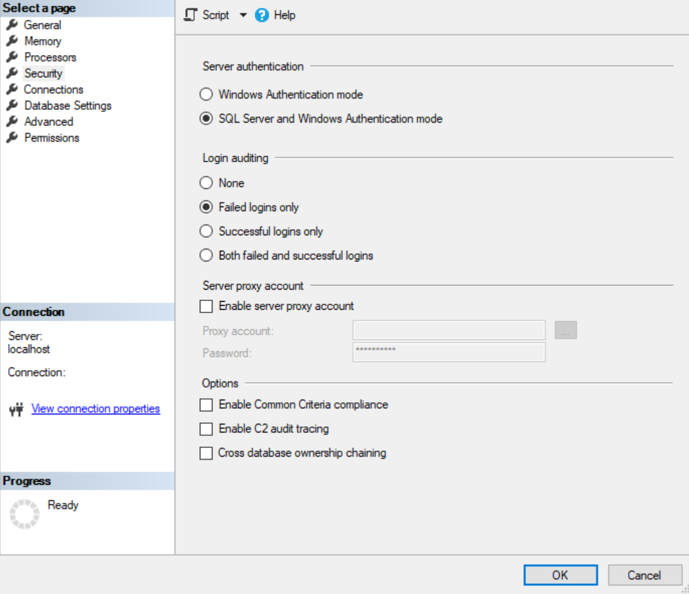
Configuring SQL Server logins
SQL server requires configuring Logins which allows users and applications to access the database. It's possible to create a new SQL server user for this purpose, the created user will only have access to database and will not have any access to operating system. Other option is to map operating system user (or Active Directory user) to SQL Server login. Each login can be configured to have one or many predefined roles or individual rights. Rights is for example ability to create new database or delete rows in a table.
For full installation following rights are required:
| Action | Required rights |
|---|---|
| 1. Configuring ntconn | CONNECT (testing connection) |
| 2. Creating a new database | CREATE DATABASE |
| 3. Install schemas and tables | CREATE SCHEMA, CREATE TABLE, ALTER TABLE |
| 4. Insert initial data | CONNECT, UPDATE, DELETE |
| 5. Upgrade database version | CREATE TABLE, ALTER TABLE |
Easiest configuration is to use Login with 'sysadmin' server role for installation. It is strongly recommended to use Login with less rights after installation.
For installing tables and schemas to existing empty database following rights are required:
| Action | Required rights |
|---|---|
| 1. Configuring ntconn | CONNECT (testing connection) |
| 2. Install schemas and tables | CREATE SCHEMA, CREATE TABLE, ALTER TABLE |
| 3. Insert initial data | CONNECT, UPDATE, DELETE |
| 4. Upgrade database version | CREATE TABLE, ALTER TABLE |
These rights can be configured per database and thus it's recommended to allow Login for Navithor Server to keep above user rights to simplify database update.
Minimum Rights required for operation after installation:
| Required rights |
|---|
| CONNECT |
| UPDATE |
| DELETE |
Creating an SQL login for SQL server authentication mode
- Open SQL Server Management studio
- Fill in credentials and click Connect
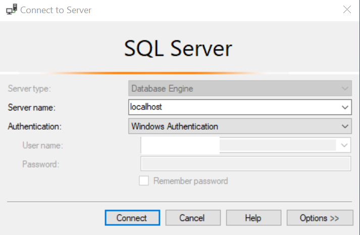
- Navigate to Security -> Logins and right click Login -> New login...
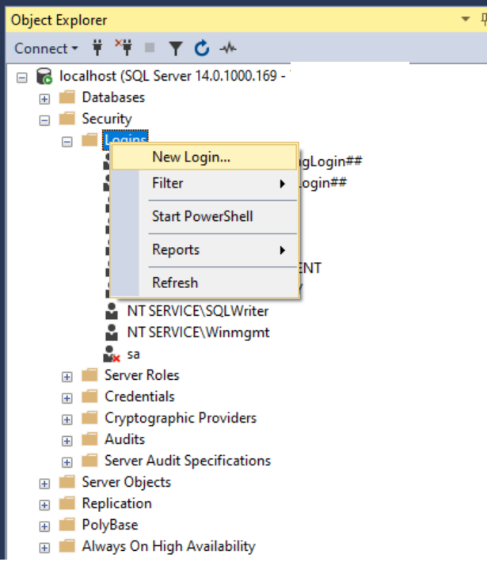
- Select SQL User and fill information
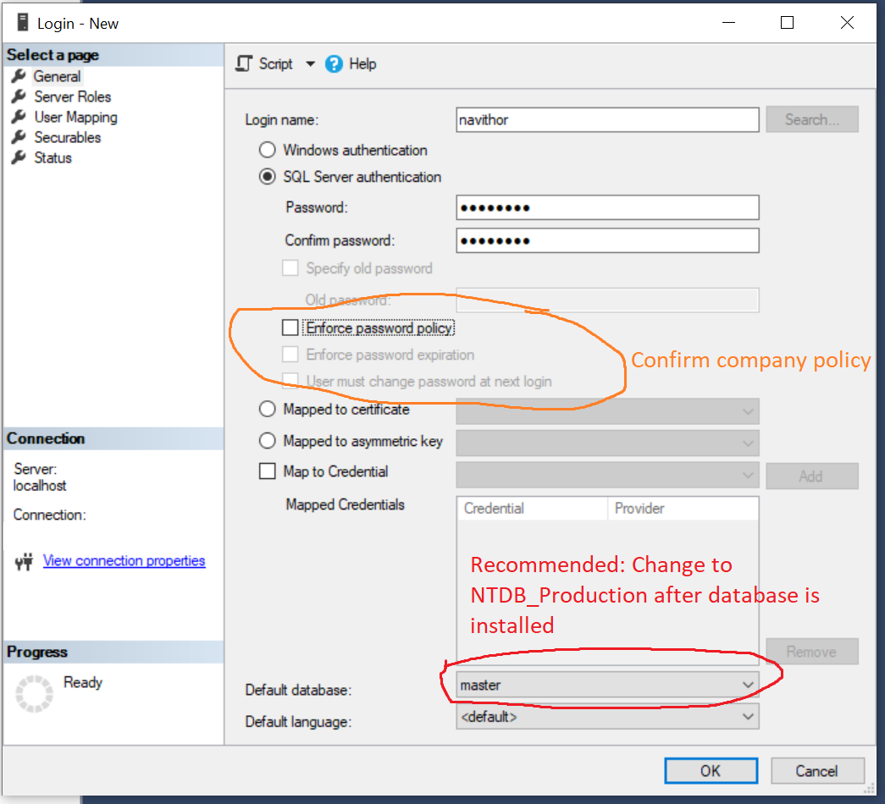
Creating an SQL login for Windows authentication mode
Setting up users for integrated security works the same way as adding SQL users. The only difference is that instead of creating an account for the SQL Server the account needs to be searched for from the domain.

Configuration cheatsheet
SQL Server Express on same PC

SQL Server (non express) on same PC
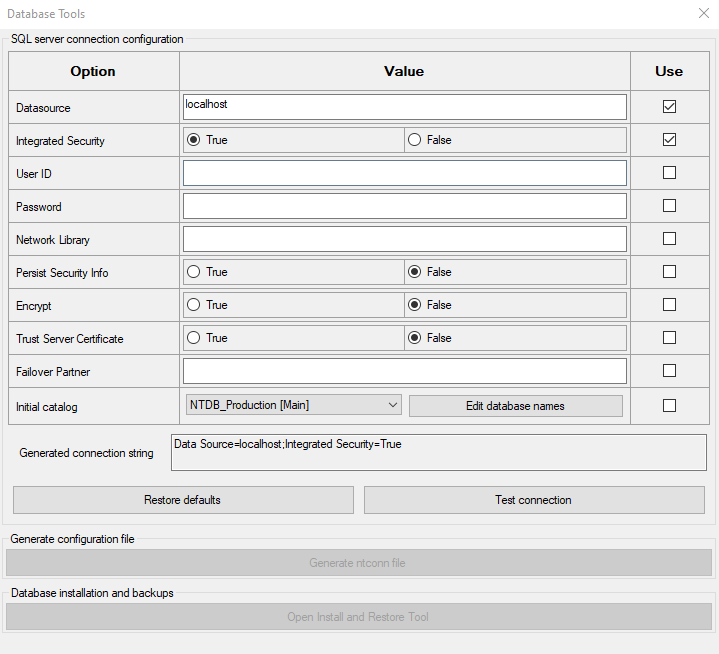
Multiple instances on same PC
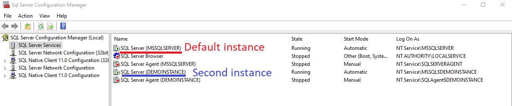
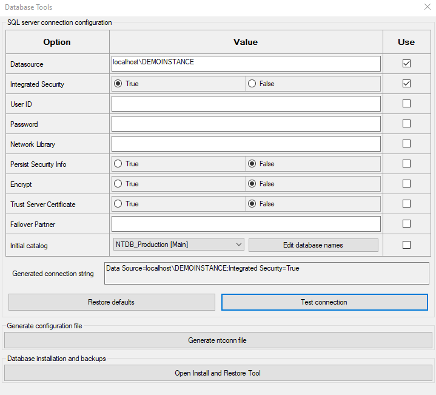
Multiple instances on remote PC (SQL Server Browser Enabled and working)
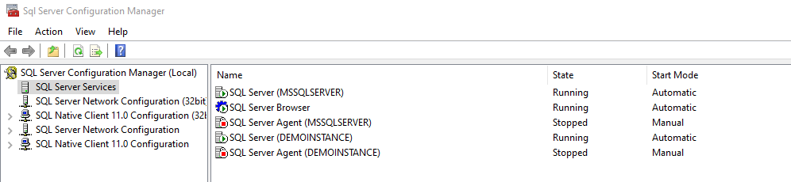
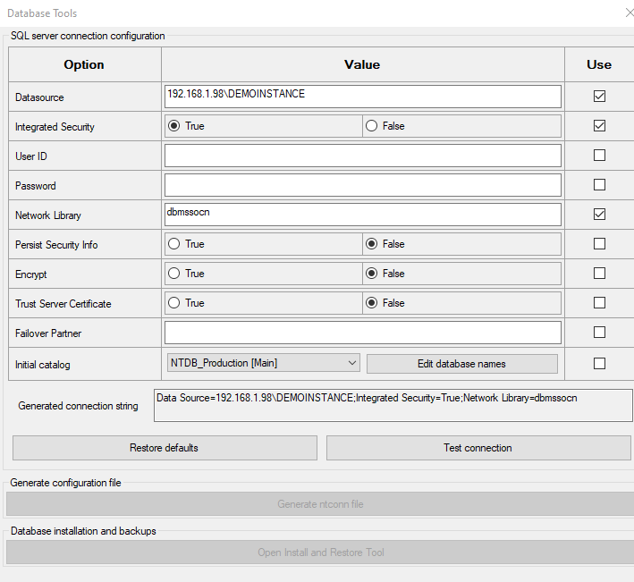
Multiple instances on remote PC (Manually configured port)

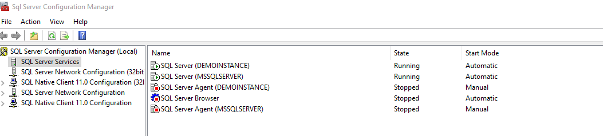
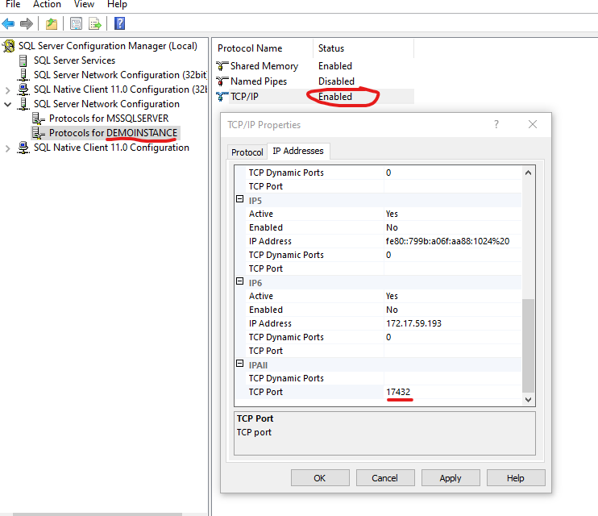
Installing database
Steps to create a functional database for Fleet control:
- Create database
- Install initial schemas and tables
- Insert initial data
- Upgrade database version
Step 1 requires: CONNECT, CREATE DATABASE rights.
Steps 2-4 require: CREATE SCHEMA, CREATE TABLE, ALTER TABLE rights.
Automatically doing full installation is recommended but step 1 can be done beforehand. Refer to Adding Navithor data to existing database.
Automatic installation
Open database tools and fill in your connection details.
Default installation configuration
Click on "Test connection", if there are no errors popup should say "Connection ok" and previously greyed out buttons should be available. If error popped up, refer to "Troubleshooting".
Navithor Server is capable of creating new database, installing schemas, creating tables and filling out initial data on it's own. Next step is to click on Generate ntconn file which will generate encrypted file containing database connection information and database names. If Database Tools was opened using Navithor Server GUI the file should already be in correct location. Otherwise copy the generated ntconn file to same directory Navithor Server.exe is located at.
Custom installation
Changing database name
Database name can be changed by clicking on Edit database names button. This will open up a new pop-up window.
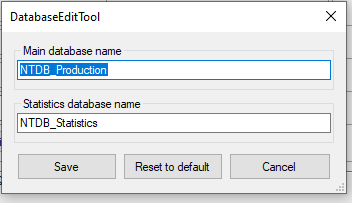
Changing database name
Navithor is using 2 separate databases. Optionally enabled statistics database will contain generated statistics and is safe to read data from. Everything else goes inside main database that should not be used as interface for other programs. Using main database as interface is not supported.
Specify the desired names for databases and click Save.
Manually creating database with Database Tools
It is possible to temporarily login with more privileged user account for database installation. This will make installation and updating more cumbersome but allows restricting the rights of user account Navithor Server uses to minimal. First connect to database with credentials that have CONNECT, CREATE DATABASE, CREATE SCHEMA, CREATE TABLE, ALTER TABLE rights, easiest is to login with database admin credentials. Configure the database names you want to use and then click on Test connection to unlock rest of controls. Finally click on Open Install and Restore Tool.
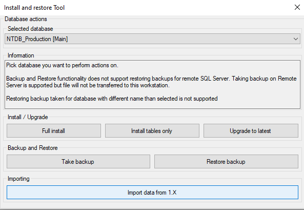
Tool will give you choice on which database to perform actions on, the choices are generated from contents written in Edit database names. If names are wrong close the Tool, edit names and open Tool again.
To install new fresh database choose which database to install from top and then click on Full install button. This will:
- Create database
- Create schema
- Update database to latest version supported to Tool. This involves creating new tables, inserting data and altering existing tables.
This will generate a fresh database which has all the data Navithor needs to function. Next step would be to configure SQL User for Navithor to use.
Adding Navithor data to existing database
In some cases an empty database has already been created on SQL Server but it is missing data required by Navithor Server. This data will be automatically created by launching Navithor Server but this can also be done manually using Install and Restore Tool. Open the Tool and click on Install tables only. This will create the missing tables and upgrade database to newest version.
Manually upgrading to newest version
Open DatabaseTool and connect to SQL Server with admin credentials. Click on Test connection and then open Install and Restore Tool. Finally click on Upgrade to latest.

Not required for Integrated Security. Should be done after installing database.
- Open Login properties (Security -> Logins -> Right click user -> Properties)
- Select User Mapping and choose user rights. Following picture has recommended rights
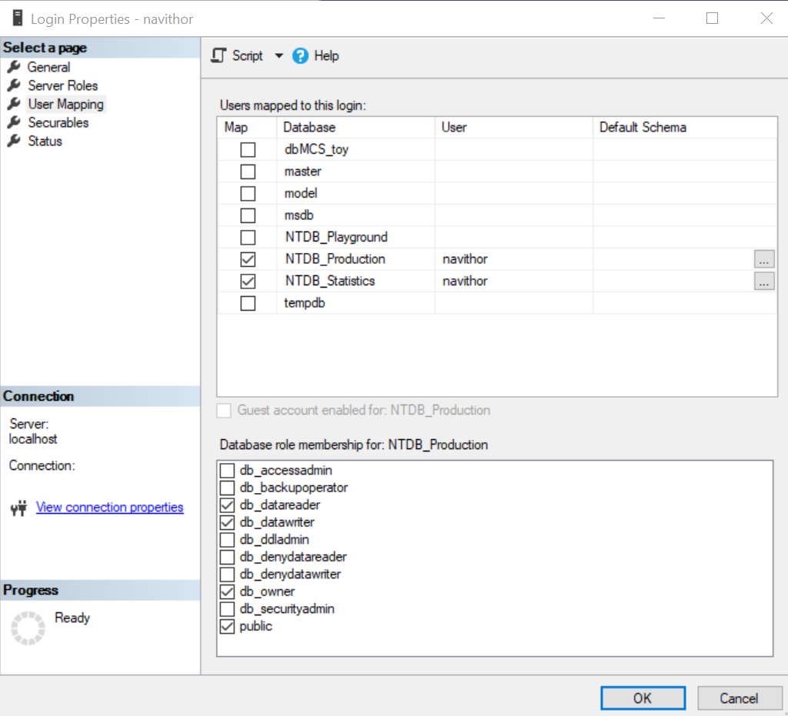
- Open Database Properties (Databases -> Right click database (default: NTDB_PRODUCTION) -> Properties
- Select Permissions
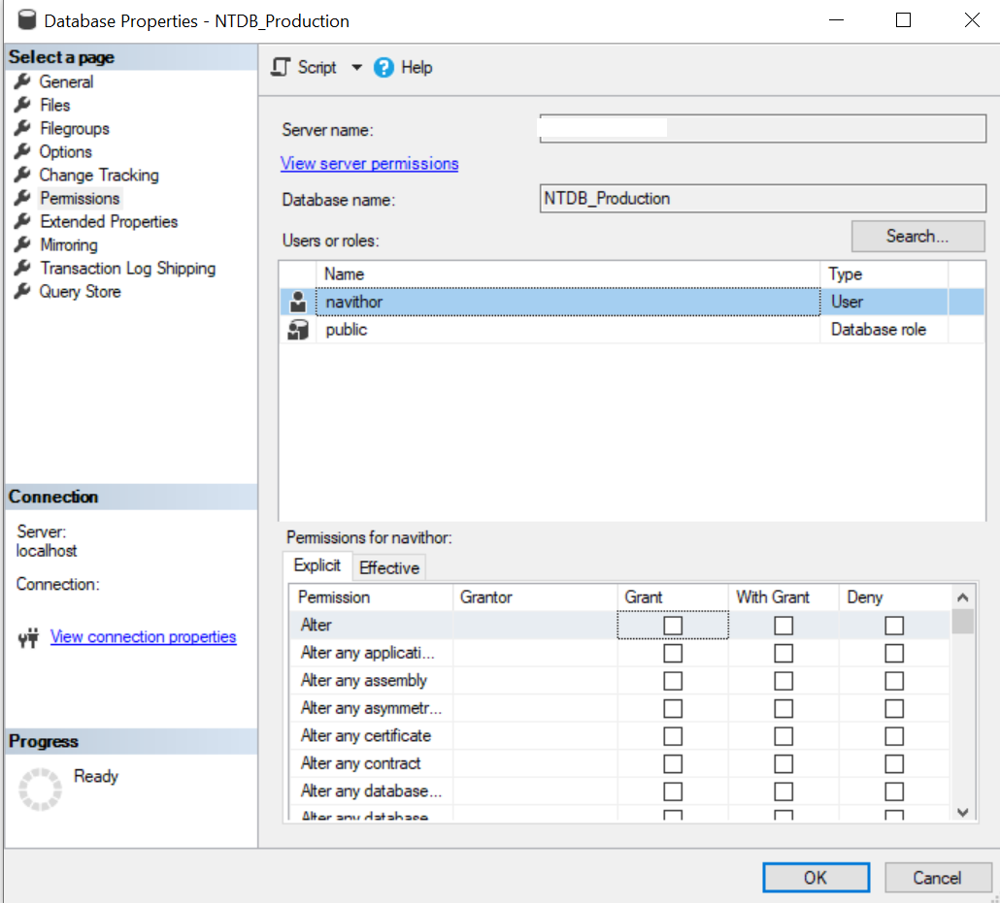
- Ensure that user has at least following Effective Rights:
- CONNECT
- UPDATE
- DELETE
- SELECT
- For updating database version additional Effective Rights are required:
- CREATE TABLE
- ALTER TABLE
Troubleshooting
TCP connection, Server not found
Example connection string: Data Source=localhost,12345\SQLEXPRESS;Integrated Security=True
Most common reason for failure is that TCP is not configured correctly or at all. In the picture below is a typical error message when there is no configuration done.
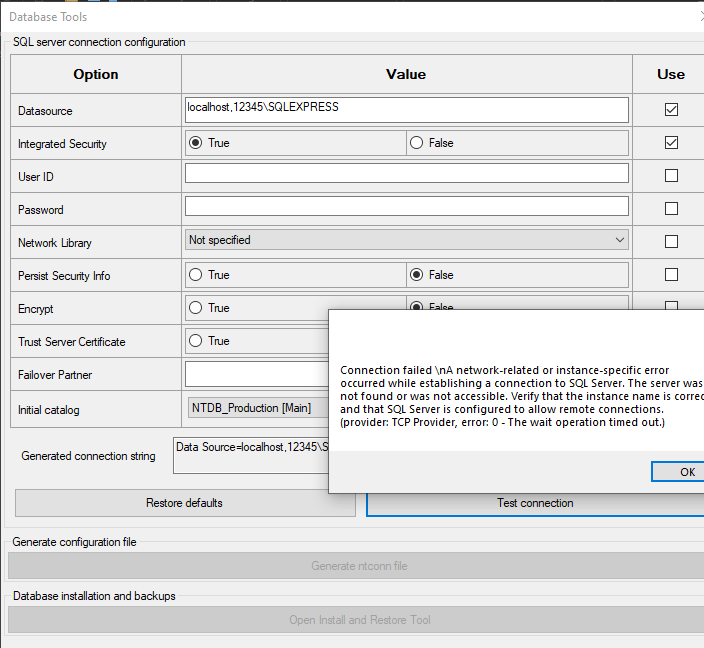
Failed to connect, no response for TCP connection
Make sure that TCP/IP is allowed for the SQL Server instance. In the picture below it is disabled.
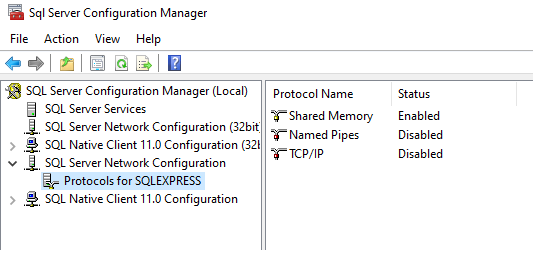
To fix the issue, navigate to SQL Server network Configuration -> Properties for <INSTANCE_NAME> -> TCP/IP -> Properties. Enable the protocol and restart the SQL Server instance by navigating to SQL Server Services -> SQL Server (<INSTANCE_NAME>) -> Restart.
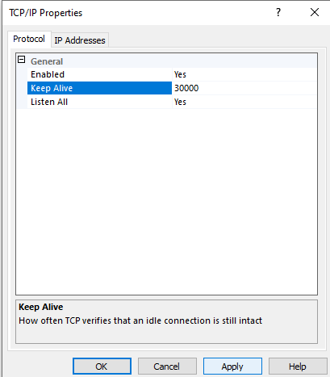
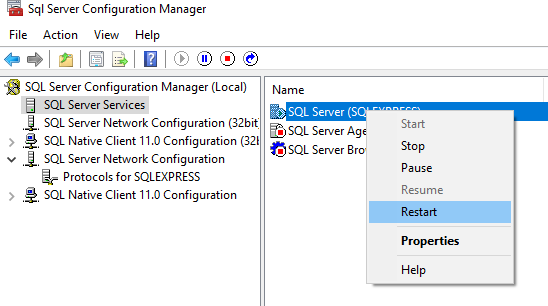
If custom port was specified (,12345 in example connection string) or the connection still fails the next step is to verify which ports and ips are allowed otherwise the same error message as above will be shown.
Navigate to SQL Server network Configuration -> Properties for <INSTANCE_NAME> -> TCP/IP -> Properties -> IP Addresses. There should be pre-configured entries for network adapters found on device but all of the connections will be disabled.
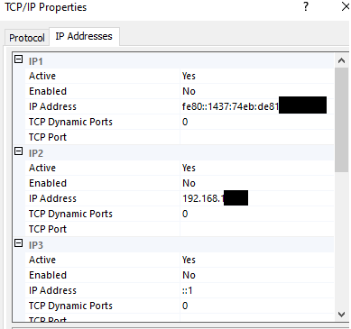
To enable connection for specific ip address change:
Enabledvalue toYesIP Addressvalue to which remote IP to allow access toTCP Dynamic Portsto0to allow connection to any port or remove the value to use specific port- If dynamic ports was disabled, set
TCP Portvalue to desired value. IN BOTH CASES THE FIREWALL MUST ALLOW THE CONNECTION!.
To enable connection for any ip but specific port:
- Scroll down to bottom to find entry for IPALL
- Change
TCP Dynamic Portsto0to allow connection to any port - Remove value on
TCP Dynamic Portsand fill out desired port toTCP Portto allow connections to specific port.
After this, restart the SQL Server instance again.
Named pipes, Server not found
Example connection string: Data Source=localhost;Integrated Security=True


Failed to connect
Likely cause for this image is that there are multiple SQL Server installations on same device or that instance name was not written correctly. Verify instance name using SQL Server Manager (SQLServerManager15.msc).
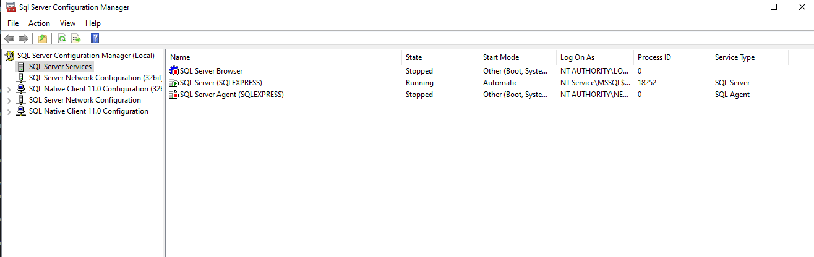
SQL Server Configuration Manager
We can see that there is SQL Server running with the name of SQLEXPRESS and that SQL Server Browser is disabled.
This can be fixed by explicitly specifying name of SQL instance in connection string.
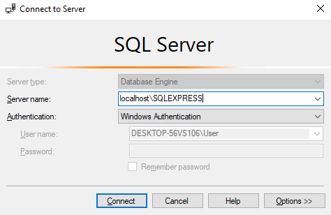
Fix for SSMS. Make sure your \ is pointing to correct direction
Fix for Database tools
Corrected connection string: Data Source=localhost\SQLEXPRESS;Integrated Security=True